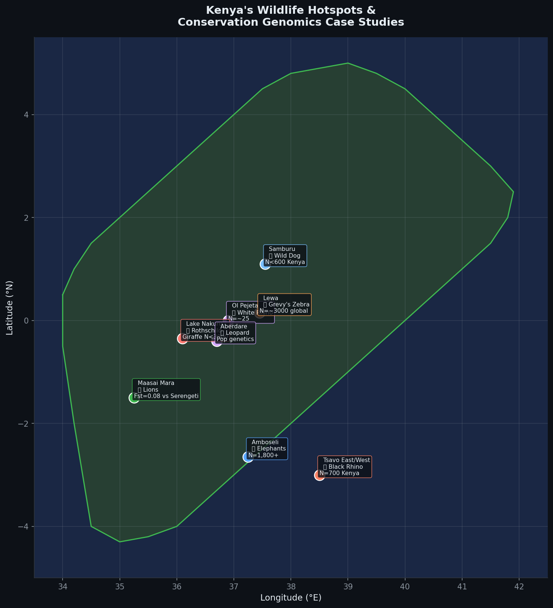
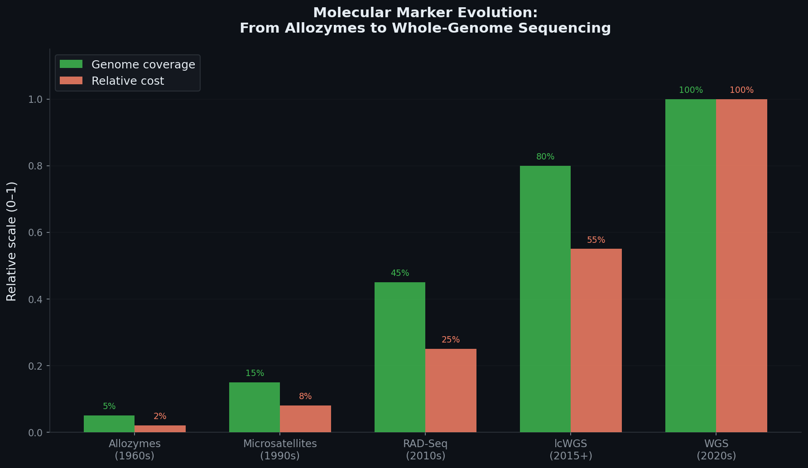
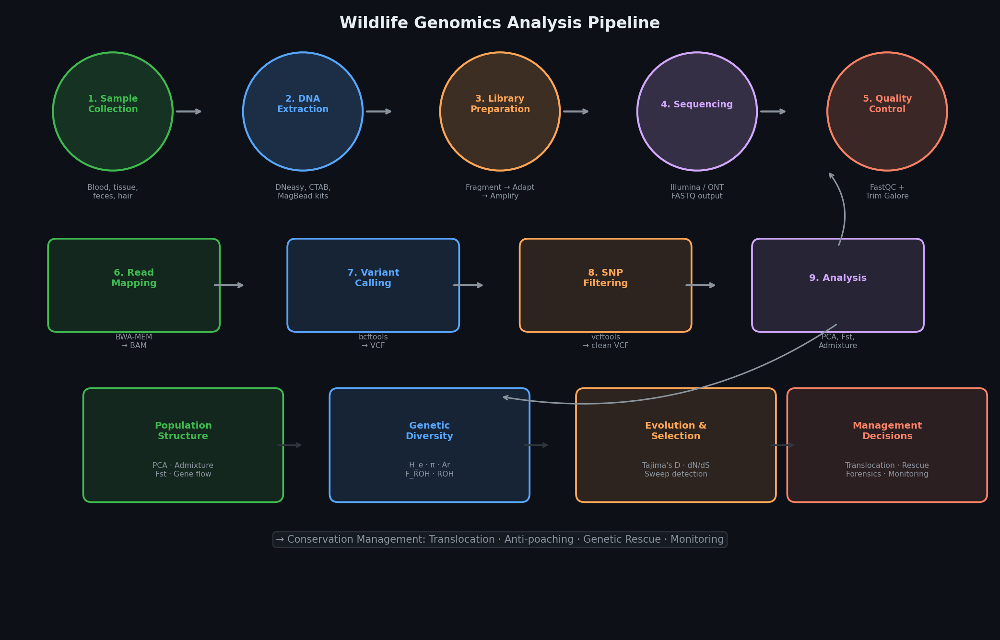
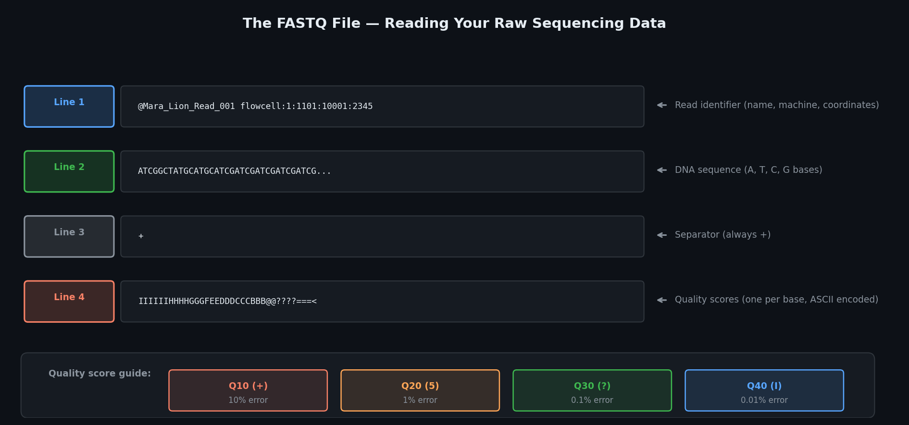
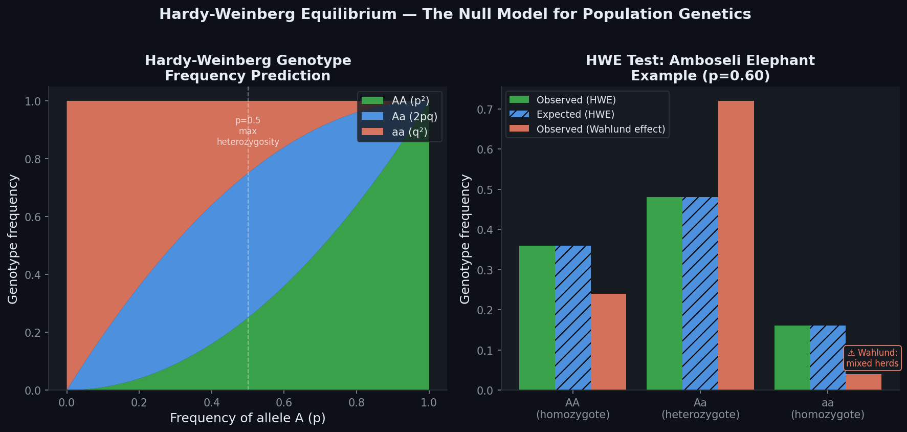
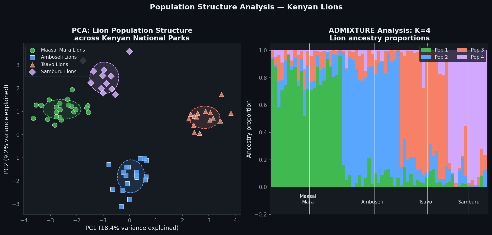
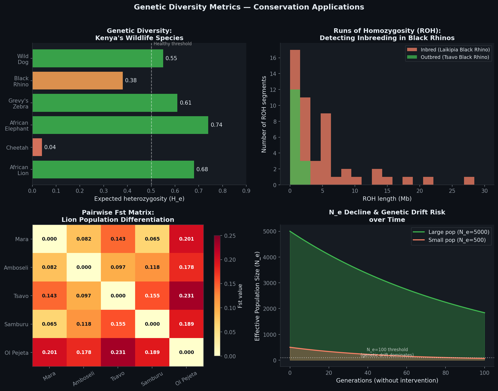
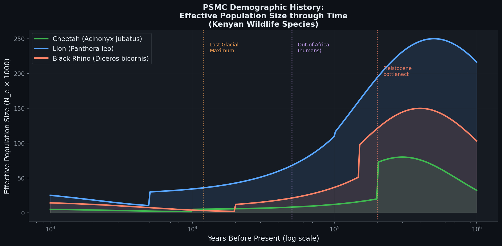
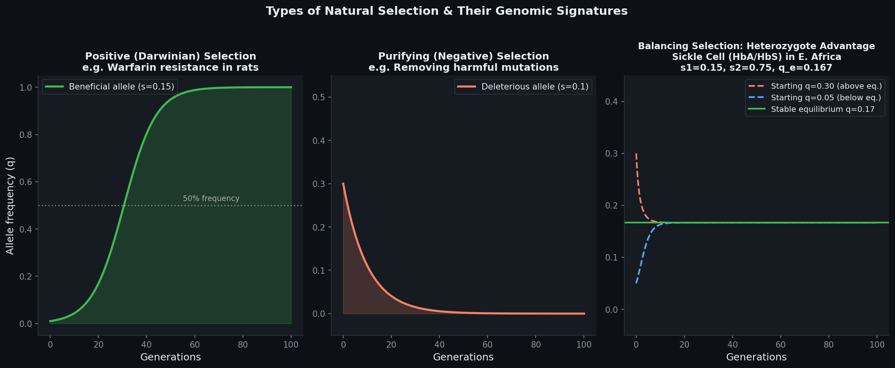
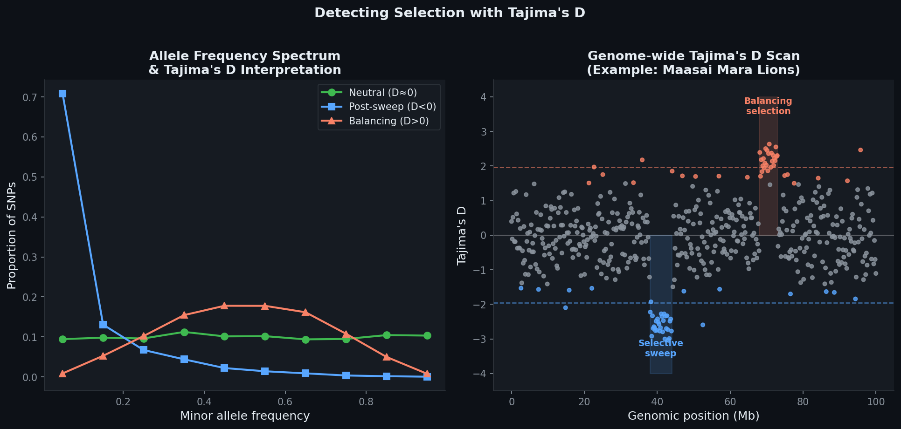

An interactive guide to conservation genomics — from raw sequencing data to management decisions, grounded in Kenyan wildlife and the theory of Philip Hedrick's Genetics of Populations (4th ed.).
You can watch a herd of elephants for 20 years and never know they are severely inbred, carrying fatal recessive alleles, or genetically isolated from the next herd 50 km away. Genomics makes the invisible visible.
"Nothing in evolution makes sense except in light of population genetics."
— Michael Lynch (2007), as quoted in Hedrick, Genetics of Populations, Chapter 1
You are managing 80 Grevy's zebra in Lewa Wildlife Conservancy, northern Kenya. The herd looks healthy. Foals are being born. But suppose:
40 of 80 animals are siblings or half-siblings. No field observation reveals this. ROH analysis detects it immediately.
A recessive cardiac defect allele at 8% frequency — silent until two carriers mate. Variant calling reveals carrier status.
15 animals share genetics with Samburu-area herds — meaning three parks share one management unit, not three.
N_e = 12, not 80, because one stallion sires nearly all foals. Genomics calculates the true genetic population size.

| Management Question | Genomic Tool | Output |
|---|---|---|
| Is this population genetically healthy? | H_e, π, Fst | Diversity metrics, threshold alerts |
| Are individuals too related to breed? | Kinship coefficients, ROH | Optimal breeding pairs |
| Should we translocate animals? | Fst, Admixture | Compatible donor populations |
| Where did confiscated ivory come from? | Population assignment | Geographic origin to 50 km |
| Is this population adapting or declining genetically? | Tajima's D, selection scans | Adaptive loci, deleterious burden |
| Did this bottleneck happen recently? | PSMC, GONE | N_e through time — centuries to millennia |
| Are these two herds one management unit? | Gene flow estimation | Number of migrants per generation |
From 20 allozyme loci to 3 billion bases of whole-genome sequence — the choice of molecular marker determines what questions you can answer, and at what cost. There is no universal "best" approach.

| Feature | Illumina (Short-read) | Oxford Nanopore (Long-read) |
|---|---|---|
| Read length | 150–300 bp | 10,000–1,000,000+ bp |
| Accuracy per base | 99.9% (very high) | 95–99% (improving) |
| Cost per Gb | ~$5–15 USD | ~$15–40 USD |
| Portability | Lab only | MinION is USB-sized — field deployable |
| Best for | SNP calling, population genomics | Assembly, structural variation, field forensics |
| Reference required? | Ideally yes | Less critical |
Oxford Nanopore in Kenya: The MinION sequencer has been deployed at KWS laboratories and several universities. Its key advantage for conservation forensics — you can sequence a confiscated sample, identify the species, and estimate population assignment on-site within 6 hours, without shipping samples abroad.
Every nucleotide of every individual's genome, sequenced to 15–30× coverage. The gold standard — and the most expensive.
| Attribute | Detail |
|---|---|
| Coverage depth | 15–30× (each base read 15–30 times) |
| Cost per individual | $300–800 USD (2024 prices, 20× coverage) |
| DNA requirement | ≥500 ng, high molecular weight (>20 kb) |
| Best sample types | Fresh blood (EDTA), muscle tissue, ethanol-preserved tissue |
| Enables | All analyses: ROH, PSMC, selection scans, individual identity, de novo assembly |
| Does NOT enable | Nothing is excluded at high coverage |
Use WGS when: studying flagship species (lion, elephant, rhino), building the first reference genome for a species, or when all downstream analyses are needed. One high-coverage genome per population is sufficient for PSMC demographic history.
High-coverage WGS of cheetahs (Acinonyx jubatus) from East Africa revealed nucleotide diversity π ≈ 0.00003 — roughly 100× lower than lions. PSMC analysis traced this to a severe bottleneck 10,000–12,000 years ago (post-ice-age). A second bottleneck occurred 1,000–2,000 years ago — coinciding with human range contraction. Critically, this genetic collapse preceded significant human impact, meaning some cheetah low-diversity is irreversible. Management implication: maximise connectivity between remaining subpopulations to prevent further drift, rather than expecting genetic rescue to fully restore diversity.
Sequence the entire genome at 1–5× depth. You cannot call individual genotypes reliably, but statistical methods extract population-level information with high accuracy. The sweet spot for large-scale conservation surveys.
| Attribute | Detail |
|---|---|
| Coverage depth | 0.5–5× (typically 1–2× for population structure) |
| Cost per individual | $40–150 USD — 5–10× cheaper than WGS |
| Key tool | ANGSD — works with genotype likelihoods, not hard calls |
| Best for | 100–1000s of individuals: PCA, Admixture, Fst, diversity |
| Cannot do | ROH (needs ≥8×), PSMC (needs ≥15×), individual ID |
Critical caveat: Never use standard GATK or bcftools hard-genotype calling on lcWGS data. At 1×, a heterozygous individual will appear homozygous 50% of the time (one read per position). Use ANGSD's genotype likelihood framework (-GL 1 -doGlf 2) instead.
A 2021 study sequenced 118 African wild dogs (Lycaon pictus) at ~2× coverage across 7 East African populations. Cost: ~$18,000 USD. This revealed fine-scale population structure invisible to microsatellites and identified a previously unknown genetic connectivity corridor between Selous and Ruaha ecosystems — a finding that immediately informed Tanzania's wildlife corridor policy. The same study would have cost >$200,000 USD with WGS.
Restriction enzymes cut the genome at specific sequences. Only DNA near those cut sites is sequenced — giving thousands of SNPs from ~1–5% of the genome at very low cost.
| Attribute | Detail |
|---|---|
| SNPs generated | 1,000–100,000 per individual |
| Cost per individual | $30–80 USD (reagents + sequencing) |
| DNA requirement | 500 ng–1 µg, moderate quality (>5 kb preferred) |
| Missing data | Can reach 30–50% — major challenge |
| Best for | Large N (100–1000s), landscape genetics, no reference genome |
Three critical RAD-Seq caveats for conservation:
1. Ascertainment bias: Your SNPs are not a random sample of the genome — they cluster near restriction sites. Diversity and divergence estimates are biased.
2. Locus dropout: If a restriction site mutates in a population, that population has no data at that locus. Dropout rates >30% seriously distort PCA and Admixture.
3. No demographic history: You cannot run PSMC or estimate ROH — you don't have the contiguous genome. If these analyses matter, lcWGS is a better investment.
PCR primers amplify only specific regions of interest — used when you know exactly which loci matter, or when DNA quality is too poor for any other approach.
| Attribute | Detail |
|---|---|
| Loci per run | 1–several thousand (multiplexed) |
| Cost per individual | Cheap per locus; expensive for many loci |
| DNA requirement | 1–10 ng — works from museum specimens, feces, old samples |
| Best for | Forensic ID panels, specific adaptive loci, ancient DNA |
| Cannot do | Discover new variants; genome-wide analysis |
Kenya Wildlife Service uses an amplicon-based panel of ~500 diagnostic SNPs to assign confiscated ivory to geographic origin within East Africa. DNA is extracted from a small ivory chip (≥5 mg), amplified with a multiplexed PCR panel, and sequenced on an Illumina MiSeq. Population assignment to 50 km resolution is achievable in 72 hours. This same panel could be adapted for rhino horn, pangolin scales, and bushmeat identification.
Every genomics project follows the same core pathway — from raw sequencing reads to filtered variants ready for population genetic analysis.

All genomics tools run in Linux. This is not arbitrary — Linux handles files too large for any graphical application and runs tools in parallel across many CPU cores. The FASTQ file is your starting point.

# Find out how many reads you have wc -l sample.fastq # Divide by 4 = number of reads zcat sample.fastq.gz | head -n 8 # Peek at first 2 reads (compressed) # Calculate coverage depth # coverage = (reads × 150 bp) / genome_size # Example: 20M reads × 150 / 2.5Gb = 1.2× # Navigate and organise ls -lh # List files with human-readable sizes mkdir -p results/qc results/mapping results/variants
Before any analysis, run FastQC to detect problems: adapter contamination (synthetic library preparation sequences that must be removed), low-quality bases at read ends, and PCR duplicate inflation. Then trim with Trim Galore.
# Run FastQC fastqc --threads 4 -o results/qc/ sample_R1.fastq.gz sample_R2.fastq.gz # Trim adapters and low-quality bases trim_galore \ --paired \ --quality 20 \ # Remove bases below Q20 --length 50 \ # Discard reads shorter than 50 bp after trimming --cores 4 \ sample_R1.fastq.gz sample_R2.fastq.gz \ --output_dir trimmed/ # Re-run FastQC to confirm improvement fastqc -o results/qc_post/ trimmed/*_trimmed.fq.gz
Align cleaned reads to the reference genome. Each read gets a position (chromosome:base), a strand, a CIGAR string (encoding matches/mismatches/indels), and a MAPQ score (alignment confidence, 0–60).
# Index the reference (one-time) bwa index -a bwtsw reference_genome.fasta # Map reads — the -R flag (read group) is REQUIRED for variant calling bwa mem \ -t 8 \ -R "@RG\tID:Lion_Mara_01\tSM:Lion_Mara_01\tPL:ILLUMINA" \ reference_genome.fasta \ trimmed/Lion_Mara_01_R1.fq.gz trimmed/Lion_Mara_01_R2.fq.gz \ | samtools sort -o aligned/Lion_Mara_01_sorted.bam samtools index aligned/Lion_Mara_01_sorted.bam # Check mapping statistics samtools flagstat aligned/Lion_Mara_01_sorted.bam
What to look for in flagstat output:
Mapping rate >90% = excellent | >80% = acceptable | <70% = suspect (reference mismatch or degraded DNA)
Duplicate rate 10–30% = normal | >60% = may inflate variant confidence (check library prep)
Compare mapped reads to the reference at every genomic position. Positions where individuals differ are variants (SNPs, indels). The raw VCF contains real variants, sequencing errors, and mapping artefacts — filtering separates them.
# Multi-sample variant calling (recommended — more statistical power) bcftools mpileup \ -f reference_genome.fasta \ --min-MQ 20 --min-BQ 20 \ aligned/sample*.bam | \ bcftools call \ --multiallelic-caller \ --variants-only \ -O z -o variants/raw.vcf.gz # Apply filters vcftools \ --gzvcf variants/raw.vcf.gz \ --minDP 8 --maxDP 60 \ # Depth: 8–60× (3× mean) --minQ 30 \ # Variant quality ≥ Q30 --maf 0.05 \ # Minor allele frequency ≥ 5% --max-missing 0.90 \ # Present in ≥90% of individuals --remove-indels \ --recode --out variants/filtered
Hedrick (Chapter 2) calls HWE "of basic importance to population genetics" because it converts the complexity of genotype frequencies into a single parameter: allele frequency p.
In a large, randomly mating population with no selection, mutation, migration, or drift, after one generation of random mating:

The Wahlund Effect in Practice: If you collect blood from Amboseli elephants and include animals from two distinct sub-herds (northern and southern range), your HWE test will show excess heterozygotes — not because of heterozygote advantage, but because you've mixed two distinct allele frequency pools. Always structure your HWE tests by known groups or use it as a tool to discover hidden structure.
PCA collapses thousands of SNPs into 2–3 axes that capture the most genetic variation. Individuals close together on a PCA plot are genetically similar; clusters indicate populations.

# Convert VCF to PLINK format plink --vcf filtered/variants_filtered.recode.vcf --make-bed -out plink/lions --allow-extra-chr # LD pruning before PCA (removes correlated SNPs) plink --bfile plink/lions --indep-pairwise 50 10 0.1 --out plink/pruned --allow-extra-chr # Run PCA plink --bfile plink/lions --extract plink/pruned.prune.in --pca 20 --out results/pca --allow-extra-chr # Run Admixture for K=2 to K=8 for K in 2 3 4 5 6 7 8; do admixture --cv plink/lions.bed $K | tee logs/admixture_K${K}.log done # Find best K: grep "CV error" logs/admixture_K*.log
A PCA and Admixture study of lions across the Mara-Serengeti ecosystem found Fst=0.08 between Maasai Mara (Kenya) and the Serengeti (Tanzania), despite the two populations being separated by only ~50 km and connected by a famous wildlife corridor. The barrier? The Kenya-Tanzania border road and associated human settlement has suppressed gene flow enough to create moderate genetic differentiation within 2–3 generations. Management implication: maintaining the Mara-Serengeti corridor is genetically critical — without it, Mara lions will become as isolated as the Tsavo population (Fst=0.14 from Mara) within decades.
Hedrick (Chapter 2) frames diversity measurement as the central empirical challenge of population genetics. For conservation, it is existential: a population with no genetic diversity cannot adapt to new diseases, climate shifts, or habitat changes.

H_e = 1 − Σpᵢ². The probability that two randomly chosen alleles differ. Ranges 0 (no diversity) to ~0.9 (high diversity). The most widely reported diversity metric.
Tool: vcftools --het
Average pairwise nucleotide differences per site. More sensitive to the full frequency spectrum than H_e. Cheetah: 0.00003; humans: 0.001; Drosophila: 0.01.
Tool: vcftools --site-pi
Number of distinct alleles per locus, corrected for sample size (rarefaction). Responds faster to bottlenecks than H_e — rare alleles are lost first.
Tool: R package hierfstat
Total proportion of the genome in Runs of Homozygosity. The gold standard for measuring realised inbreeding — more accurate than pedigrees for wild animals.
Tool: plink --homozyg
Kenya holds ~700 black rhinos (Diceros bicornis), split across ~15 sanctuaries. Genomic analysis reveals striking variation: Ol Pejeta rhinos (descended from East African founders) have H_e ≈ 0.38, while some smaller sanctuaries with <20 individuals show H_e ≈ 0.22 — approaching the Florida panther pre-rescue levels that triggered visible inbreeding depression (sperm abnormalities, cardiac defects, immune dysfunction). ROH analysis shows F_ROH up to 0.28 in the most isolated animals — equivalent to a first-cousin mating every generation. KWS's active metapopulation management programme — moving rhinos between sanctuaries to maintain diversity — is directly informed by these genomic analyses.
The genome is a time capsule. Patterns of heterozygosity and linkage disequilibrium written into living animals today record the population sizes of their ancestors thousands of years ago.

| Tool | Time Range | Input | What It Detects |
|---|---|---|---|
| PSMC | 1,000 – 1,000,000+ years | 1 individual, ≥15× coverage | Ancient bottlenecks, expansions, species divergence |
| GONE | 1 – 200 generations | Many individuals, SNPs | Recent management-era N_e decline |
| ROH length | 1 – 500 generations | Individual WGS | Timing of inbreeding events |
| LD decay | 10 – 500 generations | Population SNPs | Recent bottleneck timing from LD pattern |
Converting PSMC time to years: PSMC estimates time in units of mutations. Converting requires the mutation rate (μ) and generation time (g): Years BP = (coalescence time) × 2 / μ × g. For African mammals: μ ≈ 1.25 × 10⁻⁸ per site per generation. A 2× error in μ doubles all time estimates — always report uncertainty ranges.
Grevy's zebra (Equus grevyi) declined from ~15,000 in the 1970s to ~3,000 today — mostly in northern Kenya (Laikipia, Samburu, Isiolo). GONE analysis of 80 Grevy's zebras estimates N_e declining from ~2,500 (50 generations ago, ~150 years) to ~380 (present), with the steepest decline in the last 10–15 generations (~30–45 years). This matches census records. Critically, the genomic analysis identified that some northern and southern sub-populations have diverged enough (Fst = 0.06) to potentially be managed as separate units — with important implications for translocation decisions under the national recovery plan.
Selection is the engine of adaptation — and in small populations, an engine that stalls. Hedrick's Chapter 3 establishes the mathematical foundation; conservation genomics shows its life-and-death consequences.

| Condition | Outcome | Example (s=0.01) |
|---|---|---|
| N_e × s ≫ 1 | Selection wins — deleterious alleles purged | Need N_e > 100 |
| N_e × s ≈ 1 | Stochastic — allele fate unpredictable | N_e ≈ 100 |
| N_e × s ≪ 1 | Drift wins — slightly deleterious alleles fix | N_e < 100 |
The most important single insight from Hedrick Chapter 4 for conservation managers: small populations lose the ability to purge harmful mutations. As N_e falls, slightly deleterious variants accumulate freely — a process called mutational meltdown.

| Method | What it detects | Test statistic | Caveat |
|---|---|---|---|
| Tajima's D | Deviation in allele frequency spectrum from neutrality | D = (θ_π − θ_W) / SE | Demographic history (bottleneck, expansion) confounds interpretation |
| dN/dS (Ka/Ks) | Excess non-synonymous change in a gene | ω = dN/dS; >1 = positive selection | Requires coding sequence + outgroup species; not single-population |
| ROH & F_ROH | Inbreeding, homozygosity of deleterious recessives | F_ROH = ΣROH_length / genome_size | Needs ≥8× WGS; long ROH only with dense SNP data |
| McDonald-Kreitman | Proportion of divergence driven by positive selection (α) | α = 1 − (Ds×Pn)/(Dn×Ps) | Requires two species; sensitive to demographic assumptions |
| Fst outlier | Genomic regions with unusually high differentiation between populations | Windowed Fst vs. genome-wide distribution | Demography can inflate Fst genome-wide; use outlier approach |
The HbS allele causes severe anaemia when homozygous (HbS/HbS — fitness severely reduced, s₂≈0.75), but heterozygotes (HbA/HbS) are protected from Plasmodium falciparum malaria (higher fitness than normal homozygotes HbA/HbA in malaria-endemic regions, s₁≈0.15). Hedrick's formula predicts the stable equilibrium: q_e = s₁/(s₁+s₂) = 0.15/0.90 ≈ 0.167. Observed HbS frequency in West Africa: ~0.10–0.15 — almost exactly the theoretical prediction. In East Africa, where malaria transmission varies with altitude (lower in highland Kenya), HbS frequencies are lower — exactly as the model predicts, because s₁ (malaria selection advantage) is reduced at altitude. This is one of the most precisely confirmed cases of natural selection in humans, and it is happening in Kenya right now.
Grey wolves (Canis lupus) colonised Isle Royale (a Lake Superior island, USA) via an ice bridge ~100 years ago. By 2016, only two individuals remained. Genomic analysis revealed F_ROH = 0.28 (first-cousin-equivalent inbreeding every generation), a severe spinal malformation (lumbosacral transitional vertebrae) affecting 57% of skeletons — far above any mainland population — and an accumulation of deleterious homozygous variants across the genome. This is textbook mutational meltdown: N_e too small for purifying selection, harmful alleles fixing by drift. The response: in 2018–2019, 19 wolves from mainland Minnesota and Ontario were introduced — genetic rescue implemented with genomics guiding donor selection.
Definitions in the context of conservation genomics and wildlife management.